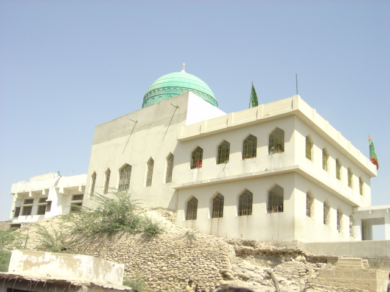
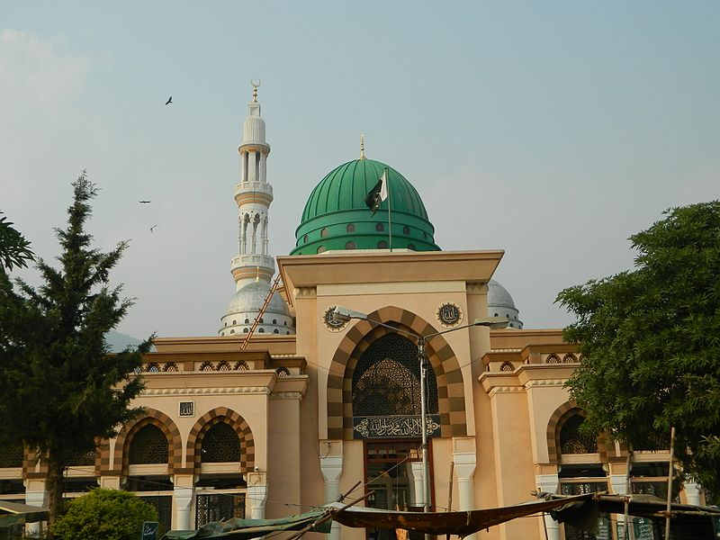
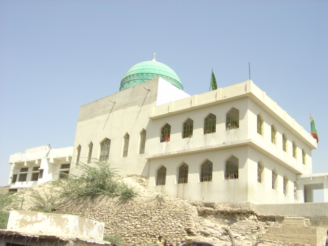

Pakistan has a number of shrines that have become places of pilgrimage. They include mausolea and shrines of political leaders (of both pre-independence and post-independence Pakistan), shrines of religious leaders and pirs (saints) and shrines of leaders of various Islamic empires and dynasties.
ABOUT:
Abdullah Shah Ghazi (Arabic: عبد الله شاه غازي) (c. 720) was an eighth-century Muslim mystic and Sufi whose shrine is located in the Clifton an affluent seaside municipality in Karachi, Pakistan.[1] His real name was Abdullah al-Ashtar. His father, Muhammad al-Nafs al-Zakiyya, was a descendant of the prophet, Muhammad, through his daughter Fatimah. Known for his commanding oratory skills, amiable demeanor, and impressive build.
MARTYRDOM:
Inside the shrine of the Abdullah Shah Ghazi
Around the year 761 AD, Muhammad Nafs al-Zakiyah and his brother Ibrahim sailed from Aden to Sind where they consulted with the governor, Umar ibn Hafs Hazarmard before returning to Kufah and Medina. His son Abdullah al-Ashtar, also known as Abdullah Shah Ghazi, married a woman from Sindh and had children by her. However, Umar received word from his wife in Basrah that Muhammad Nafs Al-Zakiyah had been killed in Medina (14 Ramadan 145/6 December 762). In consequence, Umar felt that their presence in the capital compromised his position as governor. Unwilling to take any definite action either for or against them, he summoned Abdullah al-Ashtar and suggested:
"I have an idea: one of the princes of Sindh has a mighty kingdom with numerous supporters. Despite his polytheism, he greatly honors [the family of] the Prophet. He is a reliable man. I will write him and conclude an agreement between the two of you. You can then go to him, stay there, and you will not desire anything better"[2].
Abdullah al-Ashtar went to that area spent Some years there, probably from 762 AD to 769 AD. Eventually hearing of their presence in Sindh, the caliph al-Mansur replaced Umar ibn Hafs with Hisham ibn Amr al-Taghlibi on the understanding that he seize Abdullah al-Ashtar, and annex the non-Muslim region. When Hisham, after reaching Sind, also proved loath to undertake the task, his brother Sufayh (later a governor of Sindh) did it for him, killing Abdullah along with many of his companions.[3]
Pir Mangho:

ABOUT:
Sheikh Hafiz Haji Hasan-al-Maroof Sultan Manghopir or Pir Mangho (Sindhi and Urdu: خواجہ حسن سخی سلطان عرف منگھو پیر ) is the popular name for Sufi Pir Haji Syed Khawaja Hassan Sakhi Sultan. Sakhi Sultan Manghopir's proper name is Hasan and according to another version Kamaluddin. He was titled a pir by Baba Farid, whose disciple he became. Pir Mangho Urs is celebrated in the Islamic month of Zil Hijjah. The settlement around his shrine has been named Manghopir and is part of Gadap Town in Karachi, Sindh, Pakistan.[1][2] Balochs often call this place as 'Mangi' or Garm-aap / Sard-aap (due to the presence of the hot & cold springs).
Background
This section needs additional citations for verification. Please help improve this article by adding citations to reliable sources. Unsourced material may be challenged and removed.
Find sources: "Pir Mangho" – news · newspapers · books · scholar · JSTOR (March 2016) (Learn how and when to remove this template message)
Originally, he was an Arab and a descendant of Ali ibn Abi Talib. He is a Hassani (descendants of Hasan ibn Ali) from the mother's side and Husaini (descendant of Hussain ibn Ali from father's side. He came to India from Hijaz in the 13th century AD. That was the time of the Tartar's invasion of Muslim lands which created great havoc. He participated in the jihad against them. Then he performed the Hajj, and while he was in Medina, he had a vision of Muhammad who directed him to go to Ajudhan (present day Pak Patan) and meet Fariduddin Ganjshakar[clarification needed]. He then went, to Ajudhan and presented himself to Sheikh Ganj Shakher. In 662 AH (1263 or 1264 AD) he was admitted as a disciple in the Chistiah order, and he became the 40th Khalifah/Caliph of Baba Farid Ganjshakar. Based on the advice of Baba Farid Saheb he went to Multan in 659 AH (1260 or 1261 AD). From there he travelled to various places in the pursuit of spiritual attainment and then settled down in Manghopir where he carried out his missionary work.
Crocodiles:
The crocodiles are an integral part of the shrine and are so tightly interwoven with the story of the saint that it is almost impossible to judge between fact & fiction. There are many traditions about myth of crocodiles, as if it is believed that Baba Farid gave the reptiles to Manghopir. According to scientific explanations, these crocodiles were carried through some heavy floods, during ancient times and later gathered or collected at this pond. Archaeological investigations have also suggested the existence of a Bronze Age settlement (2500-1700 BC) near Manghopir, who worshipped crocodiles and before the advent of Islam crocodiles were also thought sacred for Hindus.
Qudrat Ullah Shahab:
ABOUT:
February 1920 – 24 July 1986) was an eminent Urdu writer and civil servant from Pakistan. Shahab holds the distinction of having served as the Principal Secretary to three heads of state; Governor General Ghulam Muhammad, President Iskander Mirza and President Ayub Khan. He went on to serve as the Ambassador of Pakistan to the Netherlands in 1962 and later as Information Secretary of Pakistan and Education Secretary of Pakistan.[3]
Early life:
Shahab was born in Gilgit on 26 February 1917. His father, Abdullah Sahib, belonged to the Arain tribe of Chimkor Sahib village, district Ambala, and was a student at Muhammadan Anglo-Oriental College and a protegé under the supervision of Sir Syed Ahmed Khan. Abdullah Sahib later migrated from Aligarh and settled down in Gilgit.[4] Shahab first rose to prominence when, at sixteen, an essay he penned was selected for the first prize in an international competition organized by the Reader's Digest, London, and, in 1941, for being the first Muslim from Jammu and Kashmir qualifying for the Indian Civil Service.[5] He later moved to Karachi Pakistan after the separation of sub-continent and took charge of Under-Secretary(Import and Export),Ministry of trade, of the newly formed independent state.He also served as the first Secretary General(later the position was renamed as Chief Secretary) of Govt. Of Azad Jammu and Kashmir.
Literary works:Shahab published in English and Urdu languages for contemporary newspapers and magazines of Pakistan Writers' Guild, founded at Karachi in January 1959.[6]
He is best known for his autobiography Shahab Nama.[7]
Books:
Shahābnāmah شہاب نامہ , autobiography
Ya khuda,یا خُدا novel
Mān̲ jī, ماں جی short stories
Surk̲h̲ fītāh, سُرخ فِیتہ short stories
Nafsāne, نفسانے short stories
Shahāb nagar, شہاب نگر literary miscellany
Pathans, an essay about Pashtuns
Shah Abdul Latif Kazmi:

A beautiful Shrine of Syed Shah Abdul Latif Kazmi Qadri Barī Imām In Islamabad
ABOUT:
often referred to as Barī Imām or Barī Sarkār (1617–1705), was a 17th-century Sufi ascetic from Punjab who was the most prominent Sufi of the Qadiriyya order. He is venerated as the patron saint of Islamabad, Pakistan. Born in Karsal to a family descended from Muhammad through the linage of Imam Musa Al Kazim, the life of Bari Imam is known "essentially through oral tradition and hagiographical booklets and celebrated in numerous songs" of Indian and Pakistani Sufism.[2] In the present day, Bari Imam is one of the most popular and widely venerated saints of Punjab.[2]
Biography:
Bari Imam was eight years old when his family migrated from Karsal in Chakwal District to what is now Aabpara, Islamabad in Pakistan. According to some sources, he later married and had one daughter, though both women are said to have died prematurely.[2] After their passing, Bari Imam began wandering the forests of the Hazara district in Northern Punjab, where he spent twenty-four years as an ascetic.[2]
Because Bari Imam Sarkar did not transmit any of his doctrines to writing; as such, it may be rightly presumed that he bequeathed all of his teachings orally.[3] Bari Imam went to Ghorghushti in Campbellpur (now known as Attock) where he stayed for two years to learning fiqh, hadith, logic, and other disciplines related to Islam, because at that time Ghorghushti was a great seat of Islamic learning.
Bari Imam was renowned in his own life for being an ascetic who subjected himself to great self-humiliation in the public sphere, "living among the pariahs and consciously exposing himself to the disdain of the people."[2][4]
A celebrated miracle worker, Bari Imam is also described in regional lore as one through whom God performed many marvels to convince the local people of the truth of Islam; thus, some of the most popular miracles ascribed to him are his having caused water to gush forth from rocks and his having brought back to life the dead buffaloes of a peasant who had earlier provided the saint with milk during his ten years of spiritual seclusion.[2]
Ali Hujweeri:
ABOUT:
Abu ’l-Ḥasan ʿAlī b. ʿUthmān b. ʿAlī al-Ghaznawī al-Jullābī al-Hujwīrī (c. 1009-1072/77), known as ʿAlī al-Hujwīrī or al-Hujwīrī (also spelt Hajweri, Hajveri, or Hajvery) for short, or reverentially as Shaykh Syed ʿAlī al-Hujwīrī or as Dātā Ganj Bakhsh by Muslims of the Indian subcontinent, was an 11th-century Iranian Sunni Muslim[4] mystic, theologian, and preacher from Ghazna, who became famous for composing the Kashf al-maḥjūb (Unveiling of the Hidden), which is considered the "earliest formal treatise" on Sufism in Persian.[5] Ali Hujwiri is believed to have contributed "significantly" to the spread of Islam in South Asia through his preaching,[6] with one historian describing him as "one of the most important figures to have spread Islam in the Indian subcontinent."[7]
In the present day, Ali Hujwiri is venerated as the patron saint of Lahore, Pakistan by the traditional Sunni Muslims of the area.[8][9] He is, moreover, one of the most widely venerated saints in the entire Indian subcontinent,[10] and his tomb-shrine in Lahore, popularly known as Data Darbar, is one of the most frequented shrines in South Asia.[11] At present, it is Pakistan's largest shrine "in numbers of annual visitors and in the size of the shrine complex,"[12] and, having been nationalized in 1960, is managed today by the Department of Awqaf and Religious Affairs of the Punjab.[13] The mystic himself, remains a "household name" in the daily Islam of both India and Pakistan.[14] In 2016, the Government of Pakistan declared 21 November to be a public holiday for the commemoration of the commencement of Ali Hujwiri's three-day death anniversary.[15]
Kashf al-maḥjūb:
Main article: Kashf ul Mahjoob
Ali Hujwiri is perhaps most famous for writing what has been described as "the earliest formal treatise on Ṣūfism in Persian,"[61] the renowned Kashf al-maḥjūb (Unveiling of the Hidden).[62] The work presents itself as an introduction to the various aspects of orthodox Sufism, and also provides biographies of the greatest saints of the Islamic community.[63] The Kashf al-maḥjūb is the only work of Ali Hujwiri that has remained until today.[64]
Bibi Pak Daman:
ABOUT:
Bibi Pāk Daman (Urdu: بی بی پاکدامن) is the mausoleum of Ruqayyah bint Ali located in Lahore, Punjab, Pakistan.[1] Legend has it that it holds the graves of six ladies from Muhammad's household (Ahl Al-Bayt). Ruqayyah bint Ali ibn Abu Talib was the daughter of Muhammad's cousin and son-in-law Ali ibn Abu Talib with his wife Sahba' bint Rabi'a al-Taghlibiyya.[2] Ruqayah bint Ali was the Half sister of Al-Abbas ibn Ali and also the wife of Muslim ibn Aqeel[3] (emissary of third Shi'a Imam Husayn ibn Ali to Kufah). Others are said to be Muslim ibn Aqil's sister and daughters. It is said that these ladies came here after the event of the battle of Karbala on the 10th day of the month of Muharram in 61 AH (October 10, AD 680). Bibi Pak Daman, which means the "chaste lady", is the collective name of the six ladies believed to interred at this mausoleum, though it is also (mistakenly) popularly used to refer to the personage of Ruqayyah bint Ali alone.[4] They were among the women who brought Islam to South Asia, preaching and engaging in missionary activity in the environs of Lahore. It is said that Data Ganj Bakhsh, considered a great Sufi saint of the South Asia, was himself a devotee of the Bibi Pak Daman shrine[4] and received holy knowledge from this auspicious shrine.
Some scholars consider Ruqayah to have been the daughter of Sayid Ahmed Tokhta (12th century). Bibi Paak Daaman is located between Garhi Shahu and Railway Station area. The easiest way to go to Bibi Paak Daaman is from the Empress Road and from there, take the small road opposite Police Lines and then the first left-turn. Recently Government of Pakistan is considering approval of the expansion of the Bibi Pak Daman's shrine.
Syed Musa Pak
Shaikh Syed Abul Hassab Musa Pak Shaheed (Urdu: شيخ سيد ابوالحساب موسى پاک شهيد ) was Sufi and his mausoleum is located at Multan, Punjab, Pakistan. Shaikh Syed Abul Hassab was son of Syed Hamid Bakhsh Gilani. He was martyred in 1592 AD (1001 H) during a civil war of Langah tribe, when he received a bullet in his chest by chance.[1] His shrine is situated in historical city of Multan. Syed Musa Pak buried near Pak Gate inside the wall city of Multan, Punjab, Pakistan. The Urs of Syed Musa Pak Shaheed takes place annually at his Mausoleum in Multan.(11ve Wali Sarkar). The family of musa pak shaheed is involved in comunity welfare specially in education. The successor (Sajadanaseen) of Darbar Musa Pak (shrine) is Makhdoom Syed Abu ul Hassan Gilani.
Fariduddin Gnjshakar:
ABOUT:
Farīd al-Dīn Masʿūd Ganj-i-Shakar (c. 4 April 1179 – 7 May 1266) was a 12th-century Punjabi Muslim preacher and mystic.[3] who went on to become "one of the most revered and distinguished ... Muslim mystics" of the medieval period.[4] He is known reverentially as Bābā Farīd or Shaikh Farīd by Muslims, Sikhs and Hindus of the Punjab Region, or simply as Farīduddīn Ganjshakar.
Life:
Fariduddin Masud was a great Sufi master who was born some time in 571 H.(1175 A.D.) at a village called Kothewal, 10 km from Multan in the Punjab region of what is now Pakistan, to Jamāl-ud-dīn Suleimān and Maryam Bībī (Qarsum Bībī), daughter of Sheikh Wajīh-ud-dīn Khojendī. He was a Sunni Muslim and was one of the founding fathers of the Chishti Sufi order.[1] Baba Farid received his early education at Multan, which had become a centre for Muslim education; it was there that he met his teacher Qutbuddin Bakhtiar Kaki, a noted Sufi saint, who was passing through Multan on his way from Baghdad to Delhi.[5] Upon completing his education, Farīd left for Sistan and Kandahar and went to Makkah for the Hajj pilgrimage with his parents at the age of 16.
Once his education was over, he moved to Delhi, where he learned the Islamic doctrine from his master, Qutbuddin Bakhtiar Kaki. He later moved to Hansi, Haryana.[6] When Quṭbuddīn Bakhtiyār Kākī died in 1235, Farīd left Hansi and became his spiritual successor, and he settled in Ajodhan[7] (the present Pakpattan, Pakistan) instead of Delhi. On his way to Ajodhan, while passing through Faridkot, he met the 20-year-old Nizamuddin Auliya, who went on to become his disciple, and later his successor Sufi khalīfah. In Faridkot, while working as a labourer in building a fort of the Raja of Faridkot. The Raja received his blessings once the Raja realised who he was as he was able to carry bricks over head without the bricks touching him. The Raja immediately saw the divinity in him and requested to become his follower. The Raja and his descendants dedicate many shrines in his memory. His nephew and disciple and successor Alauddin Sabir Kaliyari was amongst the greatest Sufi saints and from him Sabiriya branch under Chisty order started.
Shams Ali Qalander:
ABOUT:
Sayeen Faqeer Muhammad Shams Ali Qalandar (Urdu: حضرت سا یں فقیر محمّد شمس علی قلندر) was a great Sufi saint, Faqir and qalandar, he belonged to Silsilah Owaisi Qadiriyya Noshahi, from Punjab, Pakistan. He preached Islamic teachings and enlightened the path of spirituality/Tasawuf with his guidance for the people. (Should not be confused with Shams Tabrizi )
Life
The life events[1] of Shams Ali Qalandar are mentioned in the book Tegh e Berahna. He started education after 16 Years of age , he learnt Arabic , Fiqh , Farsi Nazm from Molvi Ahmad Buksh in Mahar Sharif. After the completion he learnt Masnavi, Sharif, Tohfa-tul-Ahrar, Makhzan-Asrar, and Matlah-ul-unwar under the supervision of Khawaja Fazal Haq, he learnt Loa-e-Jami under Hafiz Abulhassan in tamiwala, during the same time he also learnt the basics of Tasawuf and Marifat e Illahi.
During this time several spiritual personalities including Khawaja Moinuddin Chishti Chisti ajmeri, Maulana Tahir Hassan, Baba Fareed ud-din Ganj. Shakar came in his dreams, once in his dream the 4th Caliph Ali ibn Abî Ṭâlib held his right hand and woke him up. Later under the Guidance of his Murshad, Sutan Bahu Sial Noshahi, he progressed in the manazil of spirituality. He used to visit his Murshad two times every month by walking 40 KOS (1 kos = 2 miles) from his home and remained 8 years in service of his Murshad & reached one of the highest stations of spirituality.
He later moved to a small town, Dhuliana Sharif and spent several years living in a Hujra attached to a mosque, in the last years of his life he moved to Shamsabad (old name: Ram Parsad)[2]
Front view of Shrine of Shams Ali Qalandar
He was ordered to adopt Qalandari tariqa.
Allama Ghulam Ali Okarvi:
ABOUT:
Shaikh ul Quran Ghulam Ali Okarvi (Urdu: غلام علی اوکاڑوی) (11 June 1919 CE or 20 Ramadan 1337 AH – 16 May 2000 CE or 11 Safar 1421 AH) was an Islamic scholar, orator, jurist, muhadis, mufasir, linguistician, in Pakistan. He carried out the duty of teaching Qur'aan and Ahadeeth for more than 50 years, and made thousands of individuals into scholars called "Sheikh-ul-Islaam wal Muslimeen". Even the Ulama of Egypt, Syria and Iraq have sought permission from him to teach Hadeeth and Tafseer. Naqeebul Ashraaf, Saiyyid Peer Tahir Allauddin Al-Qadri Al-Gillani used to refer to him with the title of "Ustaazu Asaatiza tina" (Teacher of our teachers).[1][2]
Early Life&Family:
Ghulam Ali was born in a small village 'Babanian' near Lalamusa, Gujrat, Pakistan. His ancestors were the founders of this village. They come to this place about 5 to 6 generations before him from Hazratbal Shrine, Srinagar and named it Babanian. After settlement they distribute their land to other people to strengthen their village.[citation needed]
He got his primary education from Govt. Model Primary School in 'Umar Chak (village attach to Babanian)' and middle level education from Middle School Jora Karnana in 'Jora Karnana (village near Babanian)'.
He started his early persian language education from Umer Chak.[citation needed]
Higher Education:
For higher education he formally studied in Jamia Arbia Karimia Hanfia (branch of Anjuman Hizbul Ahnaf, Lahore) in Jalandher, India and Hizb ul Ahnaf, Lahore.[citation needed] Further he greatly influenced from different scholors of his era, Naeem u deen Muradabadi, Ahmad Yaar khan Naeemi, Abul Hasanat Qadri, Syed Muhammad Asharfi....etc
DEATH:
Shaikh ul Quran died on Tuesday 11 June 2000 CE (11 Safar 1421h) at the age of 80 in Jinnah Hospital, Lahore. He was buried in his owned (purchased) land in Jamia Hanfia Dar ul Uloom Ashraf ul Madaris at GT Road Okara.[citation needed]
